Control con PLC
Ciclo verde, amarillo y rojo programado en el LOGO! con Marcha, Paro y Cruce peatonal.
Control de semáforo con cruce peatonal, supervisión desde la computadora y monitoreo por cámara con visión artificial para analizar el tráfico.

Un semáforo controlado por un PLC Siemens LOGO! 230RCE y supervisado desde una computadora por red. Cuenta con cruce peatonal para que los peatones soliciten el paso. Una cámara cuenta los vehículos y sugiere tiempos para cada luz según la demanda.
Ciclo verde, amarillo y rojo programado en el LOGO! con Marcha, Paro y Cruce peatonal.
El botón peatonal guarda la solicitud y cambia el tiempo de la luz roja para que el peatón cruce seguro.
Desde la computadora se ve el estado del semáforo y se dan las órdenes de Marcha, Paro y Cruce.
La cámara cuenta vehículos, mide su velocidad y genera estadística del flujo vehicular.
El LOGO! repite el ciclo de luces de forma automática desde que se pulsa Marcha hasta que se pulsa Paro.
Al pulsar I1 se activa el circuito y se enciende el piloto de circuito activo.
Los vehículos avanzan durante el tiempo del temporizador del verde.
Aviso de precaución: el semáforo está por cambiar a rojo.
Los vehículos se detienen. Si un peatón pulsó el botón, el rojo cambia de tiempo para dejarlo cruzar.
Al pulsar I2 el circuito se detiene y todas las luces se apagan.
| I1 | Pulsador de Marcha |
| I2 | Pulsador de Paro |
| I3 | Botón de cruce peatonal |
| Q1 | Luz verde |
| Q2 | Luz amarilla |
| Q3 | Luz roja |
| Q4 | Piloto de circuito activo |
Haz clic en cualquier diagrama para verlo en grande.
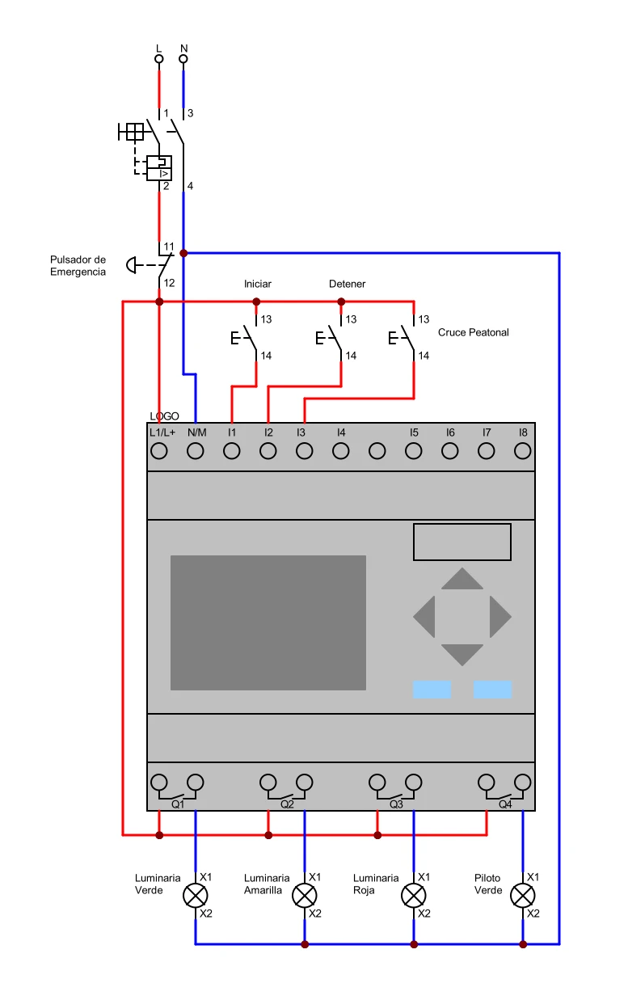
Alimentación de 120 V, protecciones, conexión del LOGO!, pulsadores y luces del semáforo.
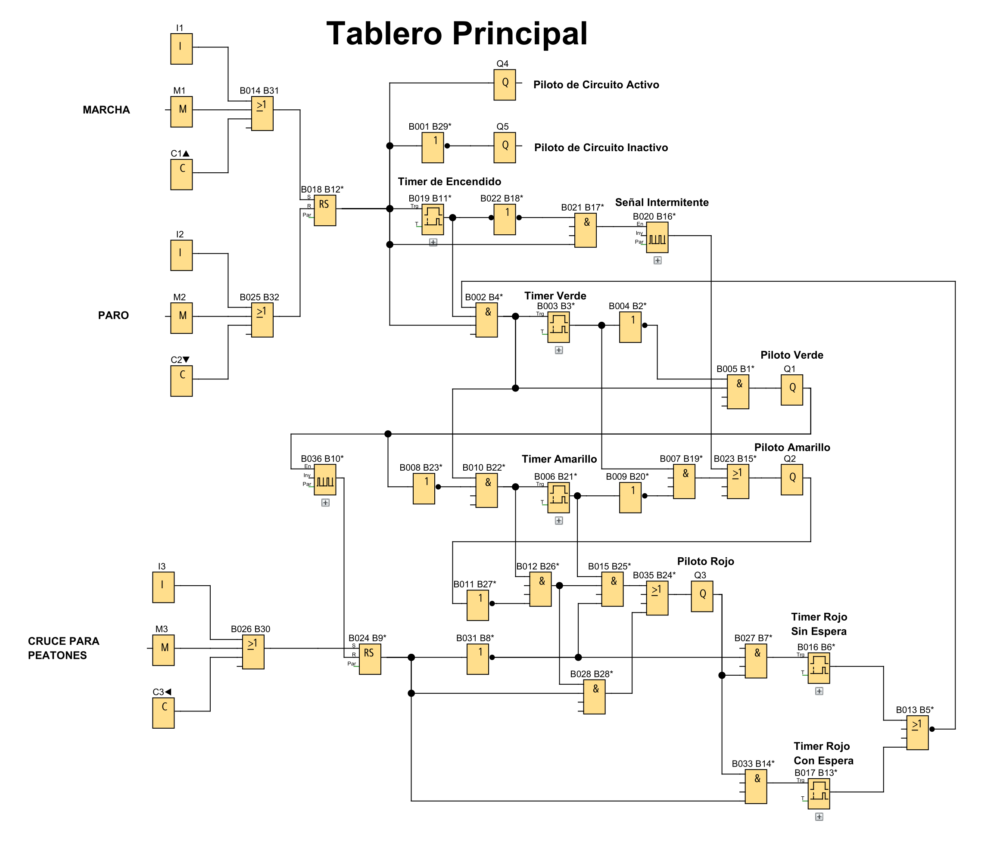
Programa "Tablero Principal" con 45 bloques: compuertas lógicas (AND, OR, NOT), biestables, temporizadores, generadores de pulsos, entradas y salidas.
32 bloques de funciones y 13 de entradas y salidas: 3 entradas (I1–I3), 3 marcas para la app (M1–M3), 3 teclas de cursor del LOGO! (C1–C3) y 4 salidas (Q1–Q4).
Recorrido de las señales: los pulsadores entran al LOGO!, el programa decide qué luz encender y la computadora supervisa el proceso con la ayuda de la cámara.
Del router salen dos cables Ethernet: uno hacia el LOGO! y otro hacia la computadora. A través de esa red la computadora se comunica con el LOGO!.
PLC que controla el semáforo, alimentado a 120 V AC.
Marcha, Paro y botón de cruce peatonal.
Luces verde, amarilla y roja del semáforo.
Muestra que el circuito está activo (Q4).
Breaker, borneras, canaleta y cableado.
Red Ethernet entre el LOGO! y la computadora.
Ejecuta la app LOGO! Traffic HMI.
Captura el tráfico para el conteo de vehículos.
Cruce de calle a escala con semáforos, botones peatonales y tablero de control.
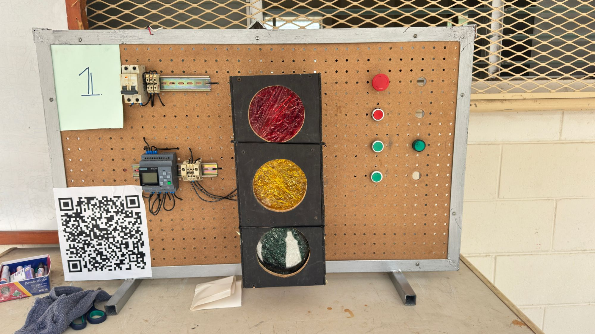
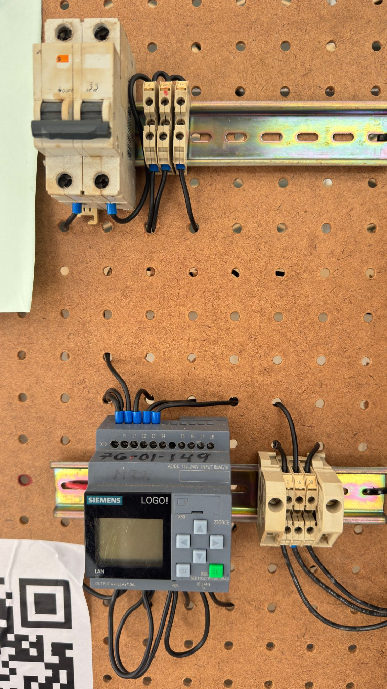
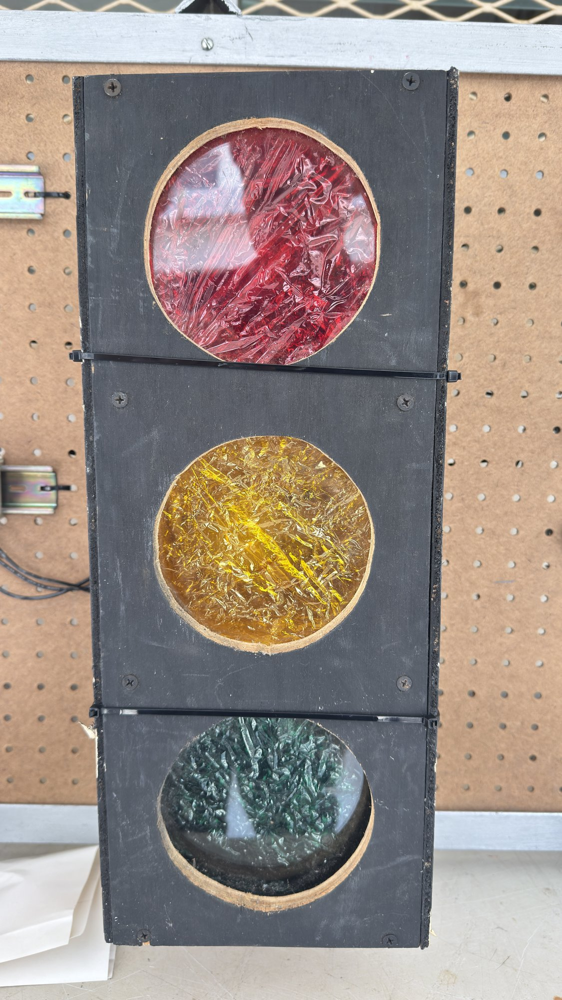
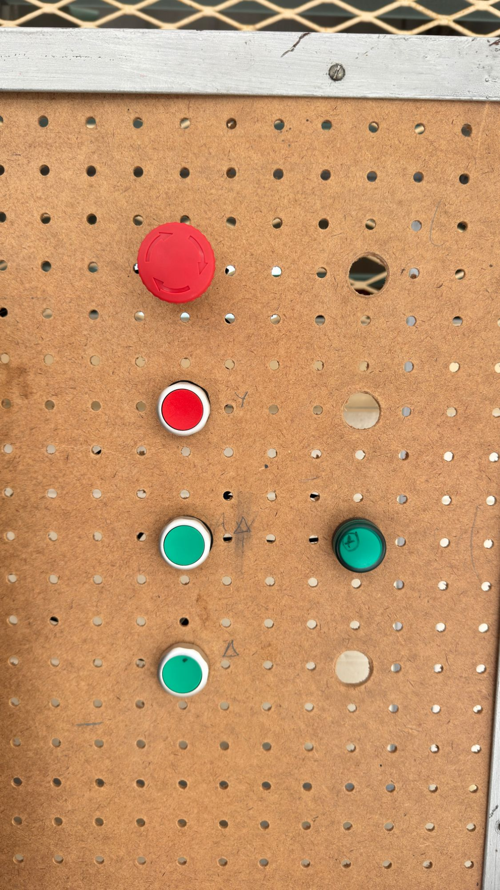


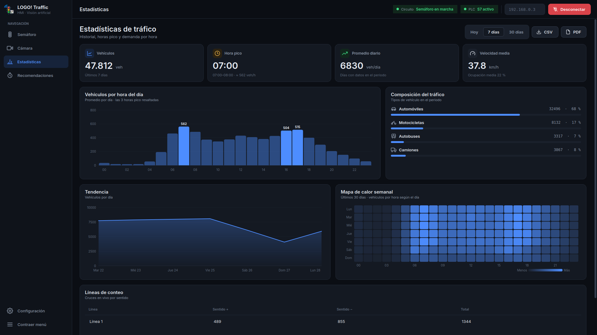
Programa de escritorio hecho en Python que funciona como HMI del semáforo: supervisa y controla el LOGO! por la red y usa la cámara para analizar el tráfico con inteligencia artificial.
Capturas de la app funcionando con datos de prueba. Haz clic en una imagen para verla en grande.
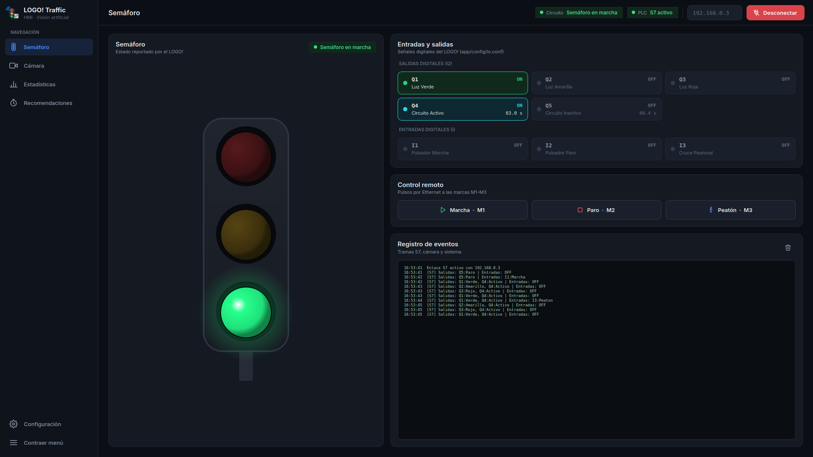
Es la pantalla principal del HMI. Muestra el semáforo tal como lo reporta el LOGO! y el estado del circuito.
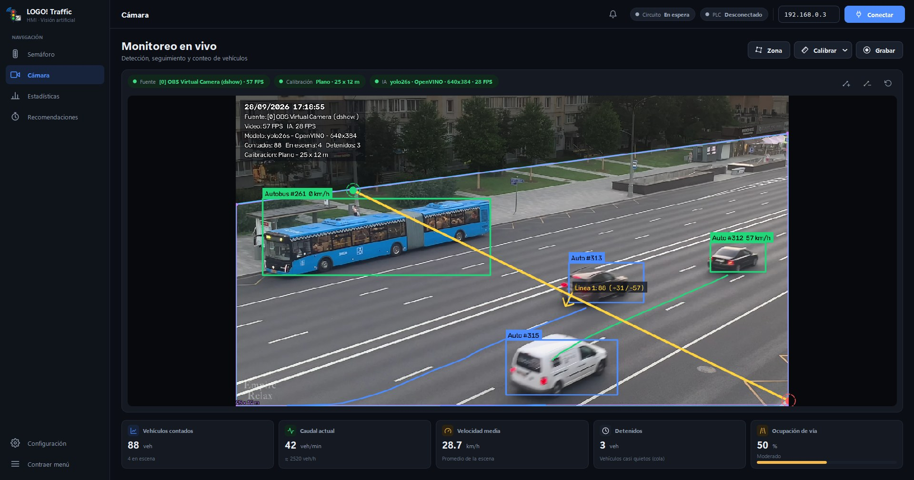
Video en vivo con la detección de vehículos por inteligencia artificial.
Historial del tráfico guardado en una base de datos para analizar la demanda.
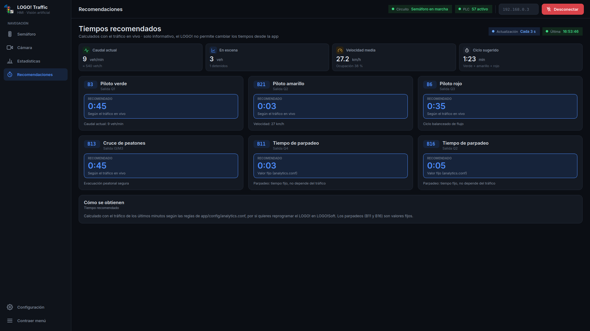
Propone un tiempo para cada temporizador del LOGO! según el tráfico que ve la cámara.
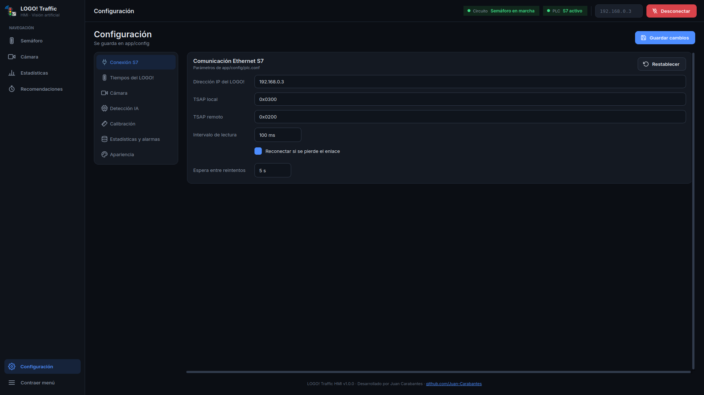
Todos los ajustes de la app en un solo lugar, guardados en archivos editables.
Lee entradas y salidas del LOGO! cada 100 ms por Ethernet.
Envía pulsos a las marcas M1, M2 y M3 del LOGO!.
Si se pierde el enlace, vuelve a conectar solo.
Cuenta vehículos y mide su velocidad en tiempo real.
Propone tiempos para cada luz según la demanda.
Avisa si se pierde el PLC, hay congestión, cola larga o no hay video.
Guarda el tráfico en SQLite y exporta a CSV y PDF.
Tema claro y oscuro, y ajustes en archivos .conf.
plc/Cliente S7 con python-snap7 en un hilo aparte para no congelar la pantalla.
vision/Captura, detección YOLO, seguimiento BoT-SORT, líneas de conteo y calibración de velocidad.
analytics/Caudal, ocupación de la vía, reglas de tiempos sugeridos e historial en SQLite.
ui/PyQt6 con estilos en hojas CSS y diseño que se adapta al tamaño de la pantalla.
Historial de muestra de una carretera de dos carriles registrado en la app durante 30 días.
Estudiantes del Instituto Tecnológico de Chalatenango que desarrollaron el semáforo inteligente.
Somos estudiantes de Técnico en Ingeniería Eléctrica del Instituto Tecnológico de Chalatenango (ITCHA), en El Salvador: una carrera de dos años, basada en competencias, que forma en instalaciones eléctricas residenciales, comerciales e industriales, líneas de distribución, mantenimiento de máquinas y sistemas, eficiencia energética y automatización de procesos industriales.
Este semáforo reúne lo aprendido en automatización: primero con lógica cableada y después con controladores lógicos programables (PLC), comunicando los componentes de control para supervisar el proceso desde una computadora.

Si te da curiosidad cómo funciona un tablero, cómo se enciende un semáforo o cómo llega la energía a tu casa, la carrera de Técnico en Ingeniería Eléctrica es para ti. Aprendes haciendo: desde tu primera instalación hasta automatizar un proceso real.
Construye instalaciones eléctricas residenciales, comerciales e industriales, líneas de distribución y subestaciones.
Empieza con lógica cableada y da el salto a los PLC y la supervisión de procesos, como en este semáforo.
Instala sistemas de generación fotovoltaica, biogás y biomasa, y aplica medidas de eficiencia energética.
Da mantenimiento a motores, sistemas de bombeo, refrigeración y aire acondicionado.
Hay demanda de técnicos electricistas en todo el país. El primer paso es animarte: lo demás lo aprendes en el taller.
Conoce la carrera en el ITCHAJuan Carabantes
github.com/Juan-CarabantesInstituto Tecnológico de Chalatenango (ITCHA) · El Salvador